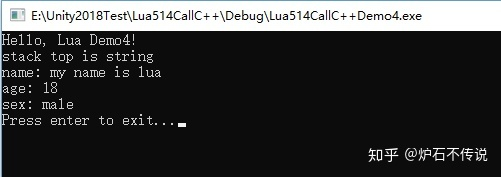
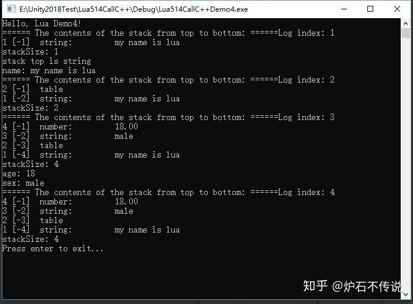

Home
上两篇文章都已经把Lua和C++函数的调用讲完了，这篇开始讲变量和Table的调用。
这篇文章主要是讲C++怎么调用获得Lua中的变量和Table的值，并且把lua中的值打印出来。
一、直接上代码：
1、在Test.lua文件内添加如下代码：
print "Hello, Lua Demo4!"
name="my name is lua"
nameTable={sex = "male", age=18}
2、在LuaTest.cpp文件内添加如下代码：
#include <stdio.h>
extern "C" {
#include "lua.h"
#include "lualib.h"
#include "lauxlib.h"
}
lua_State* L;
int main(int argc, char *argv[])
{
L = lua_open();
luaL_openlibs(L);
luaL_dofile(L, "Test.lua");
lua_settop(L, 0);
//code1
lua_getglobal(L, "name");
//code2
int isStr = lua_isstring(L, -1);
if (isStr == 0)
{
printf("stack top is not string\n");
}
else
{
printf("stack top is string\n");
}
//code3
const char* strName = lua_tostring(L, -1);
printf("name: %s\n", strName);
//code4
lua_getglobal(L, "nameTable");
//code5
lua_pushstring(L, "sex");
lua_gettable(L, -2);
lua_pushstring(L, "age");
lua_gettable(L, -3);
//code6
int iAge = (int)lua_tointeger(L, -1);
const char* strSex = lua_tostring(L, -2);
printf("age: %d\n", iAge);
printf("sex: %s\n", strSex);
lua_close(L);
/* pause */
printf("Press enter to exit...");
getchar();
return 0;
}
二、代码分析，曾经讲过的函数这里就不做分析了，不明白的，可以去看前面的文章。
code1、因为luaL_dofile(L, "Test.lua")已经把lua文件加载到内存并行执行了pcall函数。lua_getglobal(L, "name")就是从全局表中找到name字段对应的值，并把它放到栈顶。可以参考栈的运行图Log index 1
code2、lua_isstring(L, -1)是用来判断栈顶是否是string类型，还有一些类似的函数，可以自行查看API。
code3、lua_tostring(L, -1)从栈顶取出值，然后赋值给一个变量使用。数据还在栈没，没有弹出。
code4、lua_getglobal(L, "nameTable")从全局表中找到nameTable对应的数据，并把他放到栈顶。此时栈内有两条数据了，看栈的运行图Log index 2
code5、lua_pushstring是向栈内压如一个值。lua_gettable是从table中取出刚才压入的数据对应的值，并且替换掉sex。从栈的运行图Log index 3中，可以清晰的看出，数据已经从table中取出放到栈上了
code6、分别使用系统函数 lua_tointeger和lua_tostring取出栈上面的值。最终栈内是四个值，如栈的运行图Log index 4。如果此时调用lua_settop(L, 0) 那么会清空栈内所有的数据。
三、运行结果如下图

四、程序运行时栈内的变化情况如下图：

项目测试源码地址在第一篇文章末尾：炉石不传说：一、搭建C++调用Lua环境
如果你感觉这篇文章对你有用，请随手点赞或评论，你的点赞操作可以让更多想学习的人更容易找到这篇文章，谢谢！